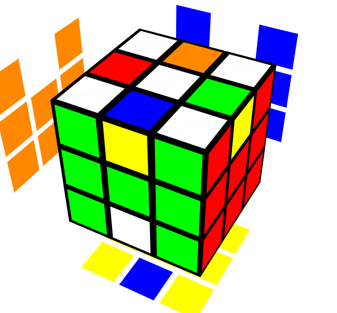
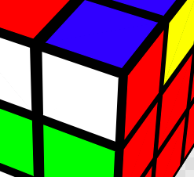
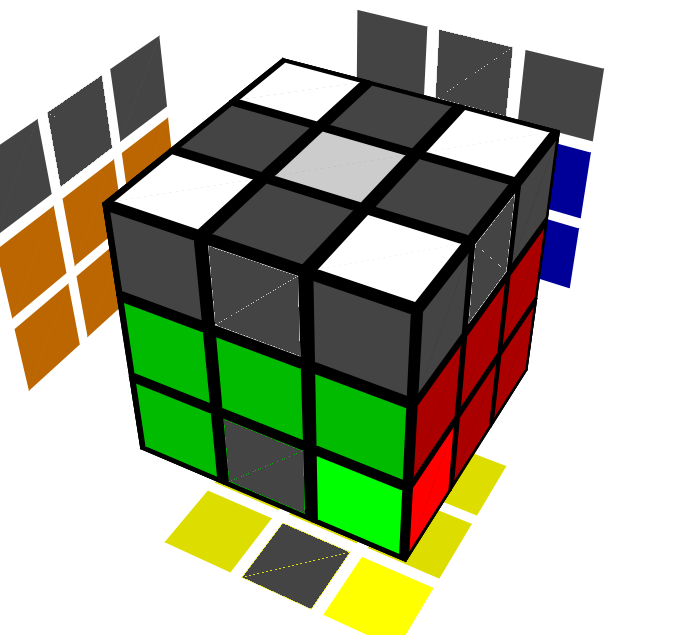
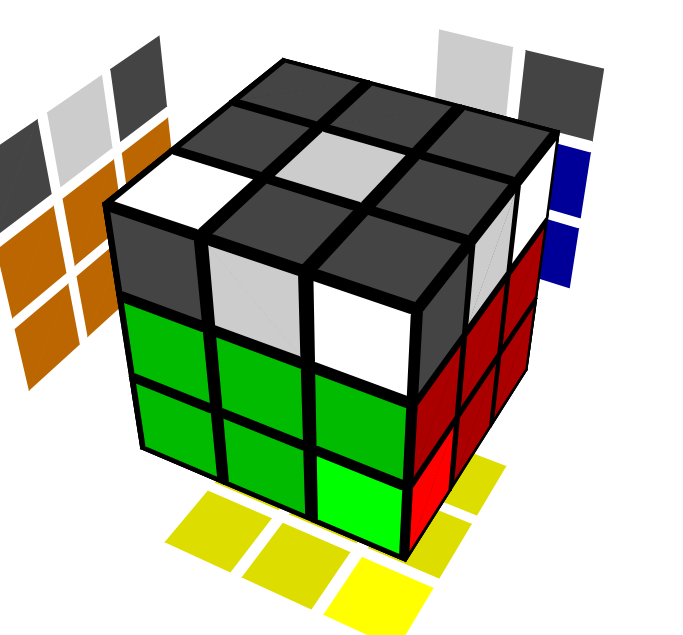
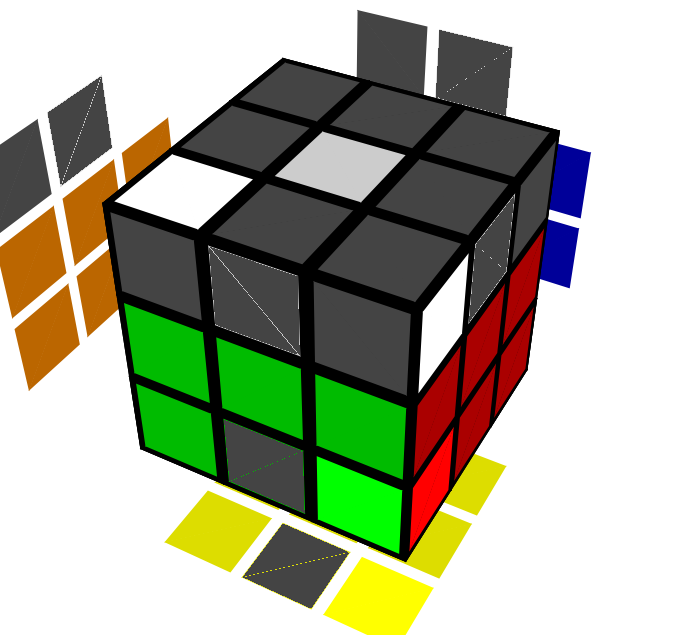
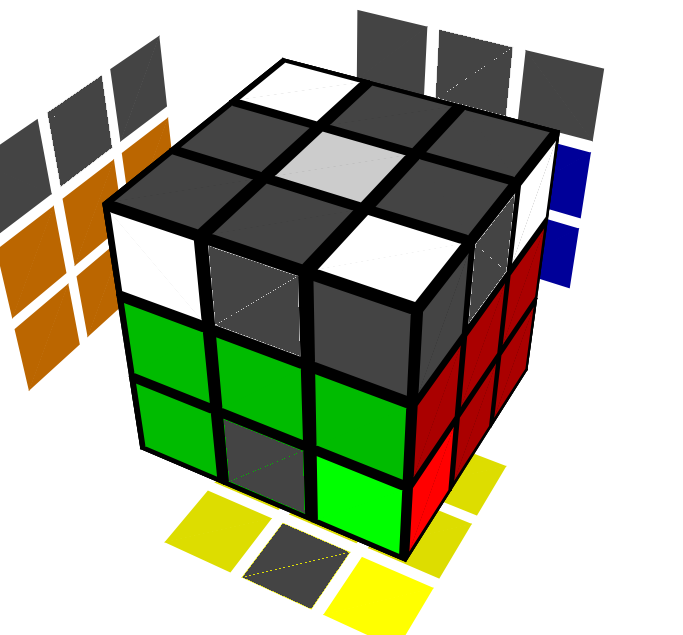
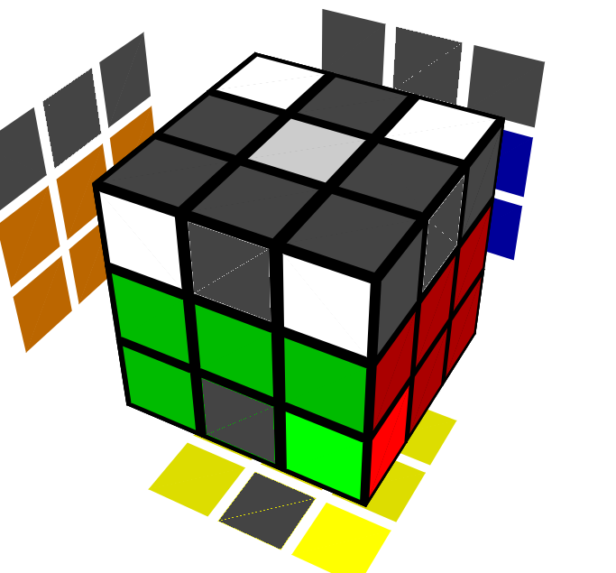
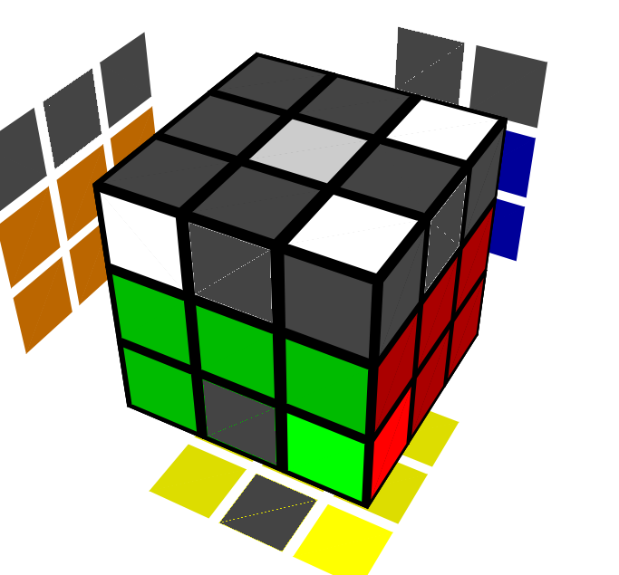
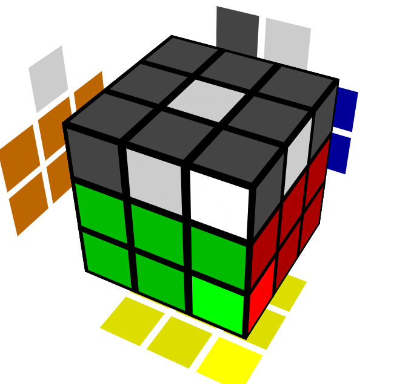
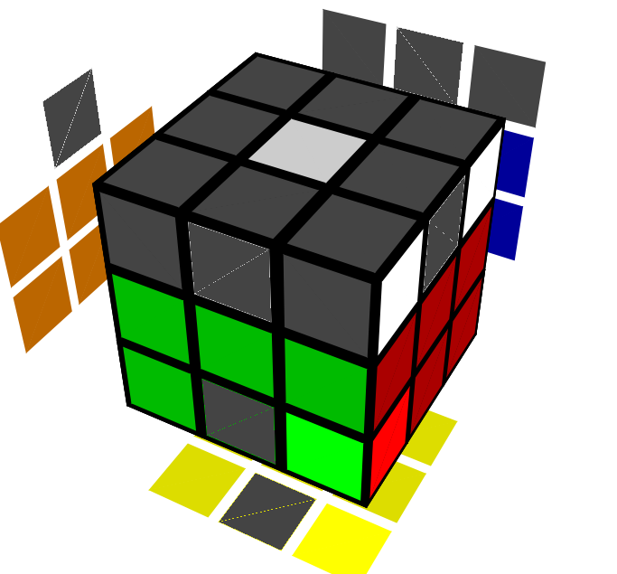

Corners (CMLL) back

RICK: O-o-okay Morty, we're almost there! Now w-we gotta solve the U layer
corners, Morty! S-s-s-see how a-all the edges are a mess, b-but the corners
are completely solved, Morty? Th-that's where we gotta get to, Morty! I-it's
a good place to be, Morty! I-i-it even has a special name c-c-called the
<M,U> group, Morty! *burp* O-o-once you're there Morty, y-y-you
don't need to turn your wrists at all to solve the rest of the cube, Morty!
MORTY: O-o-o-oh wow, Rick, th-that sounds l-l-like it'd be advantageous i-if
you wanted t-t-to solve the cube quickly, yknow? L-l-like if you wanted to
time yourself a-a-and compete against others and everything!
RICK: Like I said Morty, i-i-iit's a great place to be. N-n-now let's get
these corners solved s-s-so we can actually be there, Morty, i-i-instead
of just fantasizing about being there, Morty! W-w-w-we don't wanna be like
you and J-j-je-*burp*-essica's boobs, Morty!
Permutation back
RICK: I-I-I don't really have a good demo picture for this one, Morty, s-so
you're just gonna have t-to use your brain on this one. I hope th-that
isn't too much to ask for.
MORTY: Y-y-you know what Rick, I've j-just about had it w-with y-y-you!
I-i-i don't need your stupid 3d pictures t-to understand w-what you're saying,
Rick!
RICK: *burp* Alright good, th-they were getting really boring to make
anyway. W-w-we only need two or three here, tops.
So w-what you gotta do here is figure out which corners are "good" and
which corners are "bad". Th-then we'll use an algorithm to permute the
corners and make it so that they're all good.
MORTY: S-sounds good, Rick. H-h-how do we tell how a corner is good or
bad?
RICK: Wow Morty I-i-i thought y-y-you'd never ask, Morty. Wh-what you do
is y-y-you look at each corner a-a-and compare the sticker colors t-to
the colors of the block you made before right below it. S-s-since
the bottom of your block is yellow, th-the solved cube will be white on
top, wh-which means w-w-we ignore the white stickers when comparing the
corners to the edges. *drink* Here's an example:

RICK: S-see how th-the non-white stickers, blue and red, aren't the
same as th-the stickers of the edge piece below it (red and green)?
MORTY: O-oh wow Rick, yeah. S-so that corner is bad?
RICK: Yu-*burp*-up. H-h-here's an example of a good corner:

MORTY: O-o-oh wow Rick, th-the red a-a-and green stickers on the corner
are th-the same as the red and green on the edge!
RICK: Yeah Morty, i-i-iit's brilliant. S-so now what you gotta do is check
your corners and determine which ones are good and which ones are bad.
*drink* I-i-if you have zero or one good corner(s), do a U a-and
recheck them. K-k-keep doing that until you get at least two good corners.
F-f-from here, th-there are a couple of po-*burp*-ossibilities:
| Case |
Algorithm |
| Two good corners adjacent to each other |
O-okay, t-turn the U face so that th-the 2 bad corners are both
on the left (at UFL and UBL), then do this: R U' L' U R' U' L U.
Th-the corners are now permuted r-r-relative to each other, s-so
if you turn the U face enough times, y-y-you'll eventually see
that all 4 corners are good. |
| Two good corners diagonally across from each other |
O-okay, do this: F (R U R' U')3 F'. Th-the 3 means to do
everything before th-the 3 in parentheses three times. Again,
th-this'll make all the corners correctly permuted relative to
each other, which means that y-y-you'll eventually see 4 good
corners if you turn the U face enough times. |
| Four good corners |
W-w-w-well what are you waiting for? Go on to the next step,
y-y-you get to skip this step, no algorithms! Wubbalubbadubduuuub! |
Orientation back

RICK: O-o-okay Morty, n-now that the corners are permuted, w-w-we gotta
orient them. S-s-see how all the corners have white stickers on the U face?
Th-th-that's what we gotta get to Morty! Once w-w-we're there, we're in
th-that great place we wanted to be Morty! W-w-w-we'll be in the <M,U>
group Morty! W-w-we're that close to Jessica's metaphorical boobs, Morty!
A-a-a-all we gotta do is learn one algorithm, okay Morty?
MORTY: O-o-oh-ohhh I dd-d-on't know if I can learn another algorithm, Rick;
w-w-w-we've learned so many already! I-i-i think we sh-should just give it
a rest y-you know? Jus-
RICK: I-i-iit was a rhetorical question Morty, n-n-nobody actually cares
about the fact that y-y-you're unwilling to work to achieve your dreams,
Morty! Th-h-the algorithm you need to learn is called the Sune, Morty, i-it
goes like this: R U R' U R U2 R'
N-n-now what you have to do is look at the pattern the white corner stickers make
on your cube from above, Morty! Th-they will look like one of the patterns
i-in the table below, Morty, a-a-and if they don't, j-just turn the U face
until they do. *drink* Then just d-do what th-the table tells you to do and
you'll be in pa-a-a-*buuurp*-aradise, Morty! Y-y-y-ou'll be in the
promised land! Th-the fundamental structure of the universe w-w-will be
laid bare before your eyes, Morty! (W-w-w-when it says things like
Sune2, th-that means to do a Sune twice, Morthy! I-i-iit's pretty self
explanatory, Morty!)
| Case |
 |
 |
 |
 |
 |
 |
 |
| Algorithm |
Sune | Sune U2 Sune | Sune2 U2 Sune |
Sune U' Sune U2 Sune | Sune U Sune U2 Sune |
Sune U' Sune | Sune2 |
RICK: A-a-a-lright M-m-orty, I-i-i'm gonna take a big leap of faith here
and assume that you actually followed the i-instructions correctly. Y-y-you
know what that means Morty? I-it means we're in paradise Morty! W-w-we're
finally in the <M,U> group, Morty! F-f-from this point on our
ergonomics are th-through the roof, Morty! I-i-it's all smooth sailing
from here! It's time to move on to the
l-l-ast six edges, Morty! L-l-li-li-lic-lick
ma' buuuuutt!
Credits: Images thanks to alg.cubing.net. Genius of Rick and Morty thanks
to God (RIP, God. You did good.).